Bacastages is a Lyon-based EdTech platform, founded by Romain Saint-Jean, that helps young people find their way into the professional world.
As the UX/UI designer for two months, my mission was to analyze the website, detect the friction points and the moments where users drop off, then rebuild a more modern and simpler experience.
- Role
- UX/UI Designer (intern)
- Date
- June to July 2026
- Tools
- Figma · Claude Design
- Website
- bacastages.fr
My contributions
A website where users got lost
I audited the whole website, from the landing page to the post-login interface, to find where users were struggling and giving up.
- Key information was hidden or barely visible.
- A simple action took 6 to 7 clicks, so users gave up along the way.
- Families, middle schools and high schools were all mixed together, so it was hard to tell who the site was talking to.
- The platform's figures and partner companies were not highlighted.
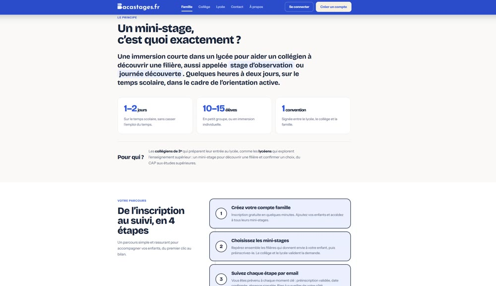
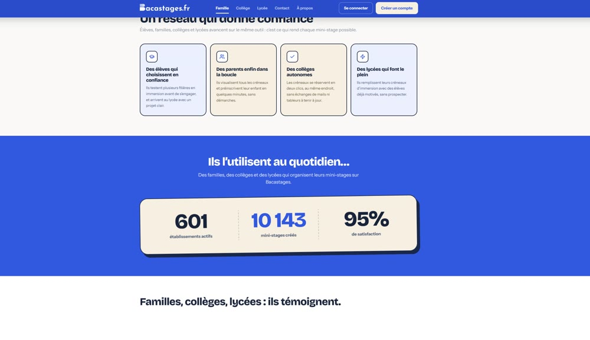
Designing for three audiences
Each audience now has its own clear entry point and path.
Families need to be reassured. They look for clear information about the partner schools that will welcome their child.
Middle and high schools want efficiency, with a dashboard that puts forward the features that save them time.
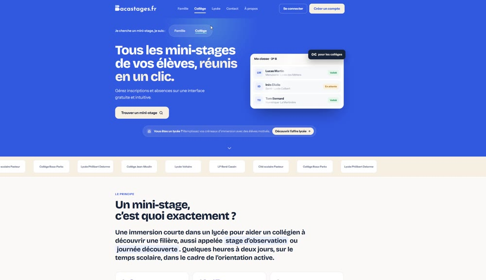
From audit to user testing
- Full UX auditAudited the landing page and the post-login interface to find the friction points and the moments where users gave up.
- User researchRan qualitative interviews with middle and high school students about their career-guidance needs.
- Workflows in FigmaDesigned all of the website's workflows in Figma, mapping every user path before the redesign.
- Redesign with Claude DesignRebuilt the website with fewer clicks, a clearer hierarchy and a modern interface.
- User testing & iterationTested the new website with about 20 people, clients of the platform and members of the incubator, then refined it.
Simpler for everyone
The main action now takes 3 clicks instead of 6 to 7, and 15 of the 20 testers completed every task with no difficulty.
“The website is clear and easy to read. I don't need to think too much to do what I have to do.” A tester
Their feedback led to three final changes, a clearer color code, consistent call-to-action buttons (same color, same shape) and key features brought forward.
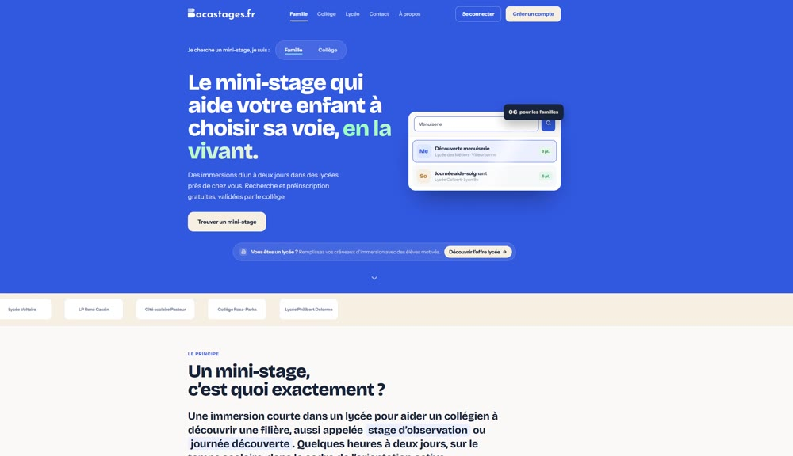
Autonomy, guided by regular check-ins
I worked independently on the audit, the workflows, the prototypes and the user tests, with very regular meetings with Romain, the founder, who shared his vision and priorities.
It was my first time using Claude Design, and Romain encouraged me to try it. It let us iterate many times and test ideas that would never have fit into a two-month internship.
Where UX meets game design
Adapting to Romain's needs, I combined my UX/UI skills with game design by bringing gamified features to the platform. I also built interactive game prototypes to help young people who don't know what to do yet try out different paths.
An ikigai made of stars
A career-discovery concept based on the ikigai. Students pull back a slingshot and place their stars on what they love, what they are good at and what matters to them.
Each star they place draws a constellation. Where the circles cross, the game suggests real mini-internships to explore near them.
Riposte, three moves and one profile
A mobile card duel that builds the student's professional profile. Milo, the game master, throws a workplace crisis on the table, and the student answers by sliding a response card. Every answer counts, in secret.
After six situations, the hidden layer is revealed. The student gets a signature card describing their style, and the game suggests immersion days that match it.
Carambolage
Carambolage is a mobile roguelite inspired by pool. Your goal is to destroy the target cubes of each arena to reach the next level. During a run, you can replace your balls with special-effect balls and choose upgrades for them.
Our team's objective was to create a highly replayable mobile game and to build a complete economy design system into it.
- Role
- Game Designer & UX/UI Designer
- Team
- 4 Game Designers, 4 Gameplay Programmers
- Date
- April to June 2026
- Tools
- Figma · Teams
My contributions
Building the gameplay bricks
Together with the other game designers, I designed the core bricks of the game, starting with the blocks:
- A block's color shows its health. The more HP, the lighter it is. It darkens as it takes damage.
- Each destroyed block drops a coin (meta currency) and an XP point to level up during the run, collected when the ball stops.
- Four shapes (square, circle, right triangle, rectangle) to create varied bounces.
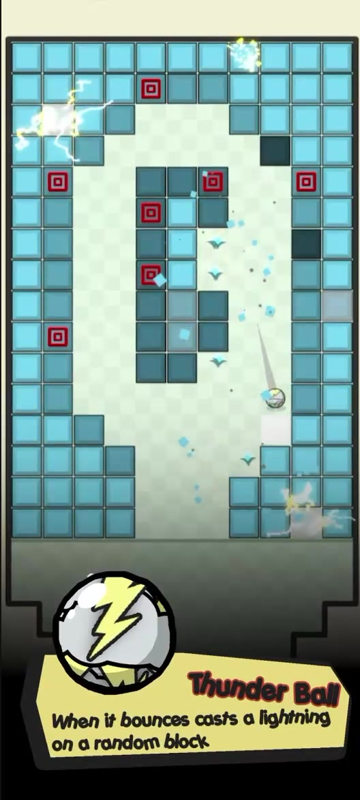
Special balls that change how you play
Each special ball is designed around a player behavior, so choosing a ball means choosing a strategy.
Laser Ball
When it bounces on a wall, it fires 2 lasers, so the player learns to aim at the walls.
Disco Ball
When it stops, it fires lasers in random directions, so players try to keep it near the center to hit as much as possible.
Designing every arena
I designed the level design of all the arenas and handled the balancing of the game.
Every level is built as if it were arena 10, then the game scales the blocks' HP with a difficulty factor that goes from ×0.2 in arena 1 up to ×1 in arena 10. The same layout looks different depending on where it appears, colors keep the same meaning within a run, and lighter blocks appearing over time give a real sense of progression.
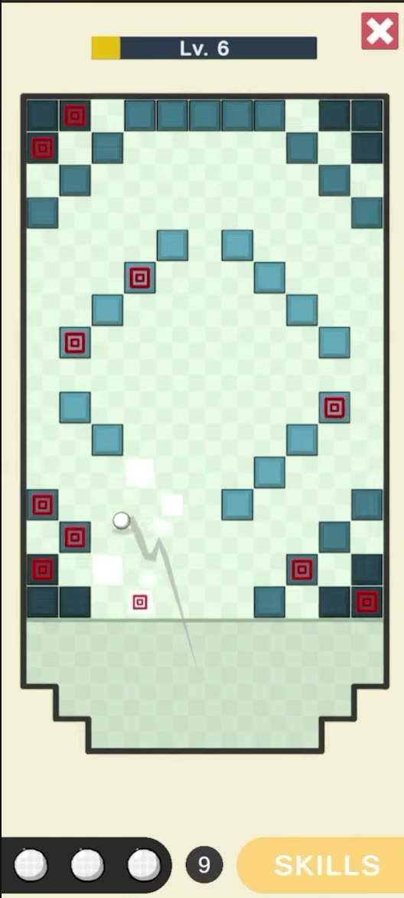
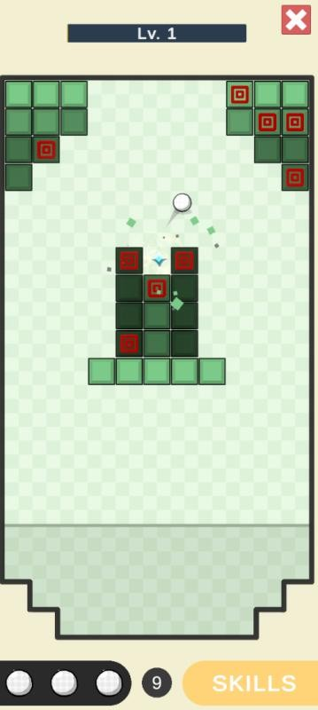
A simple, efficient mobile UI
I designed the whole HUD and the UI of the game in Figma, including the menus, the ball collection and the shop.
The phone came with strong constraints, so my goal was an interface that stays simple and efficient, where players always understand where to tap.
In the level-up screen, the player picks one of three balls. Each card shows the ball, its damage in green and its effect in a few words, and the run's upgrades stay visible below, sorted into balls and skills.
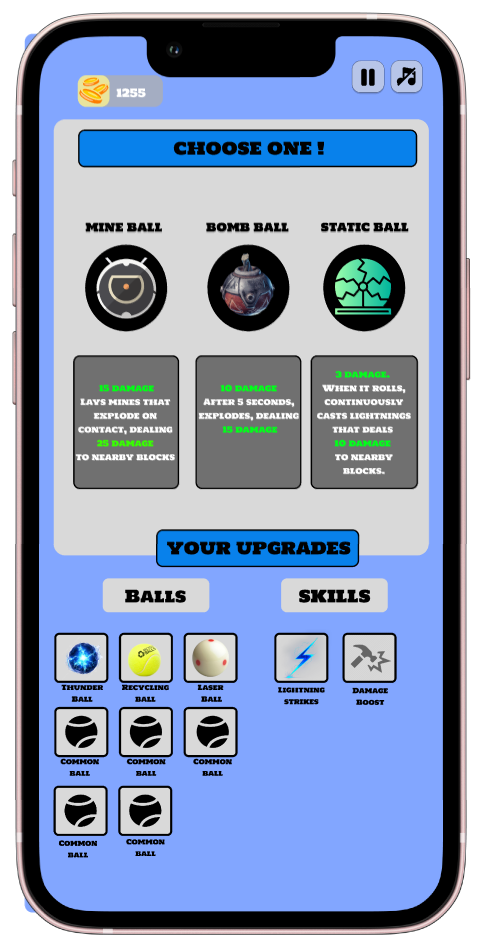
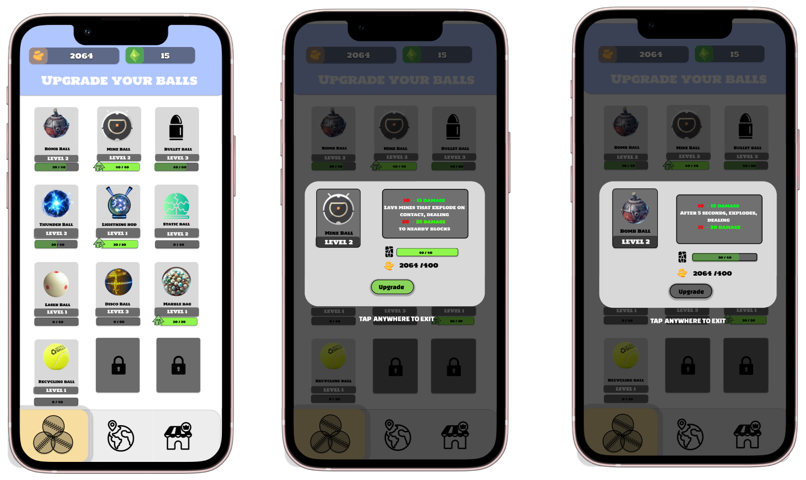
From the ball collection, a tap opens a popup with the ball's stats, its fragments and its gold cost. The Upgrade button turns green only when the player can afford it.
Onboarding without walls of text
- A clear goalA banner at the top of the first level says "Goal, destroy all" followed by the target block icon.
- Show, don't tellAn animated hand invites the player to drag the ball down, and comes back after 2 seconds of inactivity.
- First rewardAfter 8 destroyed blocks, "LEVEL UP!" appears and the player gets a first upgrade to try right away.
- Keep the tension"Level complete! Use your remaining balls…", then "LAST BALL!" when only one is left.
- A readable ending"ARENA CLEAR", or "GAME OVER" with the icons of the targets left.
A meta-progression that keeps players coming back
Worlds & shops
After a run, players return to a lobby with two shops, one for ball upgrades and one premium. Finishing a run unlocks the next world and its new balls, for good.
Gold & player level
Gold is kept win or lose, while XP resets after each run. Gold raises the player's level, which boosts the in-run XP multiplier.
Boosters & fragments
Daily quests and gems give boosters (Basic, Super, Mega) full of ball fragments. With enough fragments and gold, a ball levels up and deals more damage.
Team organization
I organized the team's work and followed up on the project using Teams.
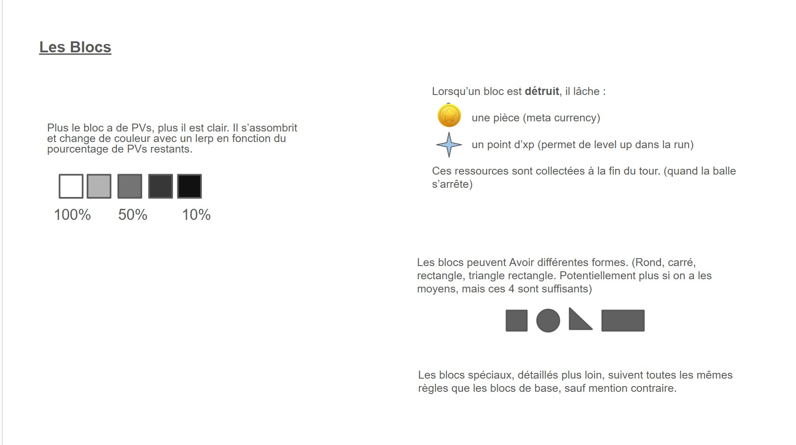
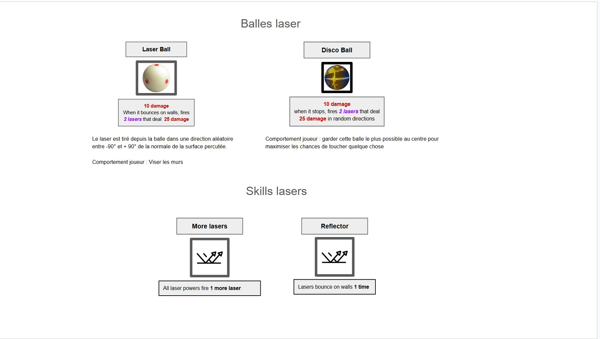
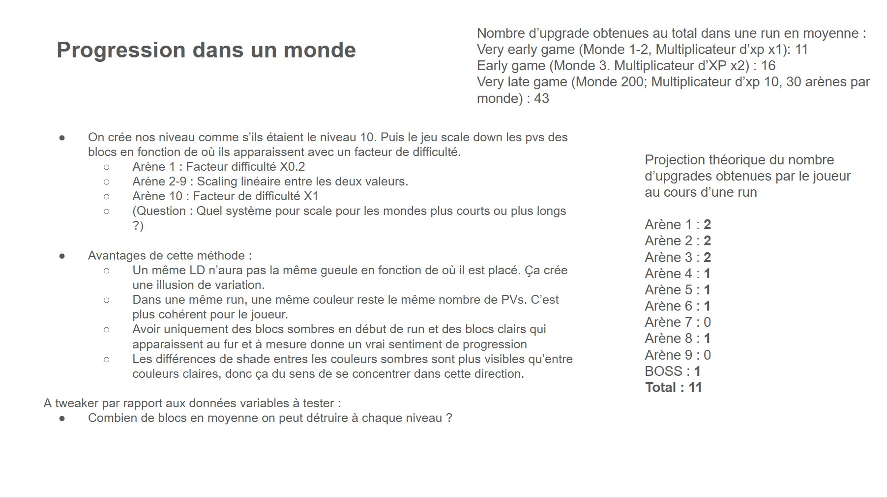
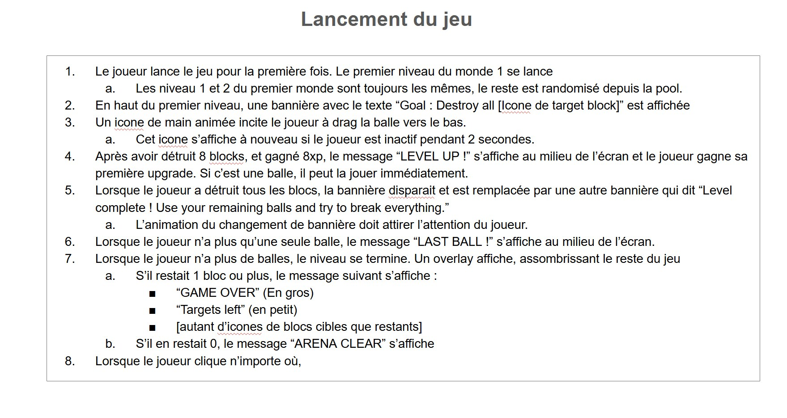
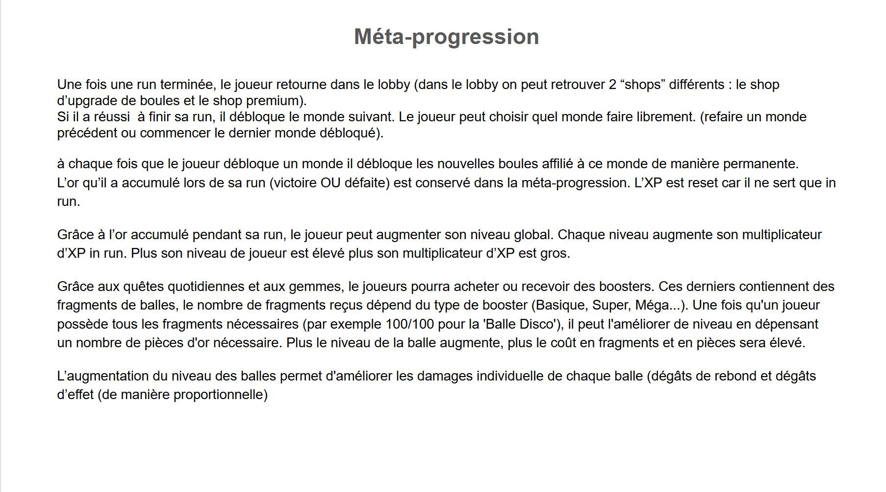
UX Analysis & UI Overhaul of Monster Hunter World
How do you modernize one of gaming's most complex menu systems without losing its soul? This collaborative project dives deep into information architecture and visual hierarchy. We identified key pain points in the current user flow and proposed a complete UI redesign aimed at reducing cognitive load and enhancing accessibility for both veterans and newcomers.
- Role
- UI/UX Designer
- Type
- Team project
- Date
- February to March 2026
- Tools
- Figma
From research to redesign
- ResearchPlayer survey, personas, pain points, visual hierarchy analysis, click count and comparisons with other games.
- UI reorganizationMenu tree and information priority with the MoSCoW method.
- WireframingGrids, layout, navigation components and concrete fixes for each pain point.
- PrototypingInteractions and micro-interactions in Figma.
- PresentationContext, pain points, solutions and a before / after of each interface.
My contributions
Immersive analysis & data gathering
My primary focus was to bridge the gap between player frustration and design solutions. After immersing myself in the game for several hours to identify its core complexities, I designed and deployed a comprehensive user survey.
I took care to craft questions with a neutral tone to eliminate bias and ensure the integrity of the data, focusing specifically on friction points within the HUD, navigation menus, and combat feedback.
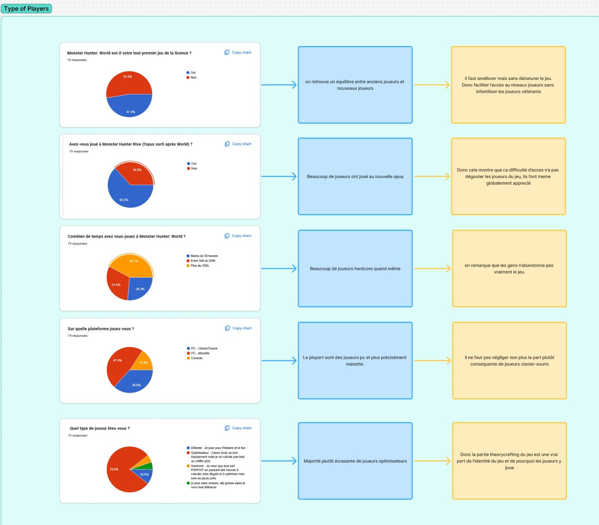
Defining the audience
Combining the survey results with research on player archetypes, I built three personas. They became our "north star" for every design decision.
- The series fans want precise data and endgame depth, and dislike visual aids that get in the way.
- The Wilds converts look for familiar landmarks and miss the modern comfort of the newer game.
- The curious newcomers need clear guidance and quick rewards, or they give up.
The key takeaway was to improve access for newcomers without patronizing veteran players.
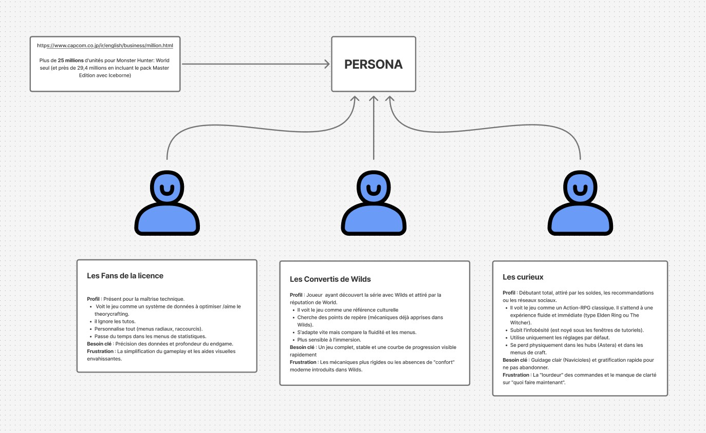
Five key user tasks
We picked five tasks players do all the time and analyzed each one step by step, from loading an item set, upgrading weapons, learning to fight, equipping decorations and setting up the radial item wheel.
For the item set, the hierarchical task analysis showed 7 steps and many button presses, including a sub-menu that is invisible in the main list and only appears in the legend at the bottom of the screen.
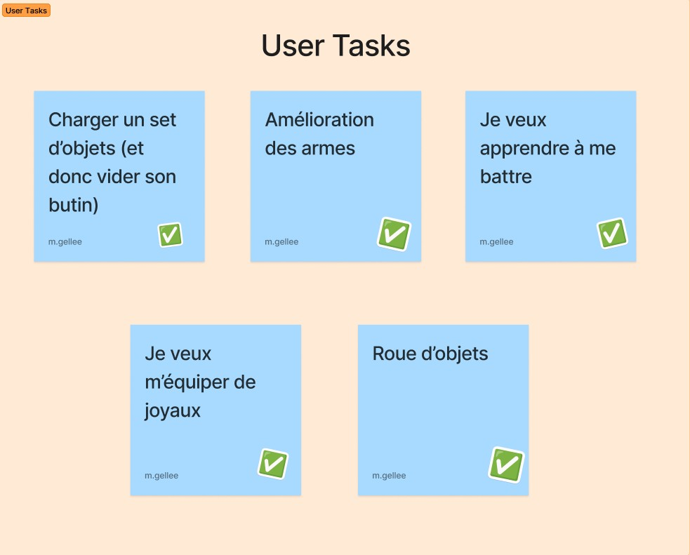
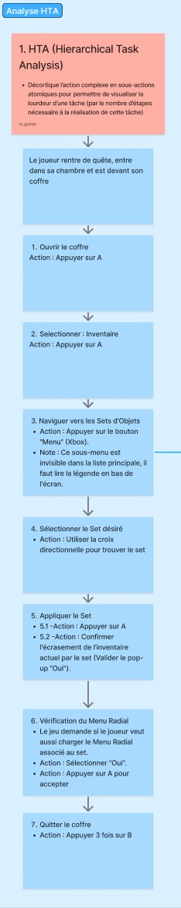
Heuristics & cognitive load
Using Jakob Nielsen's 10 usability heuristics, I explained why each screen was blocking players, then proposed a fix for each problem, like keeping the chest visible, adding a confirmation before overwriting a set, graying out what doesn't matter right now and grouping buttons by purpose.
To provide an objective basis for our overhaul, I also ran a Cognitive Load Analysis, highlighting area by area how much "visual noise" each screen sends to the player. This was the cornerstone of our final layout.
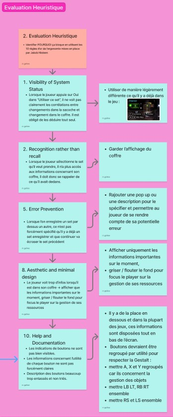
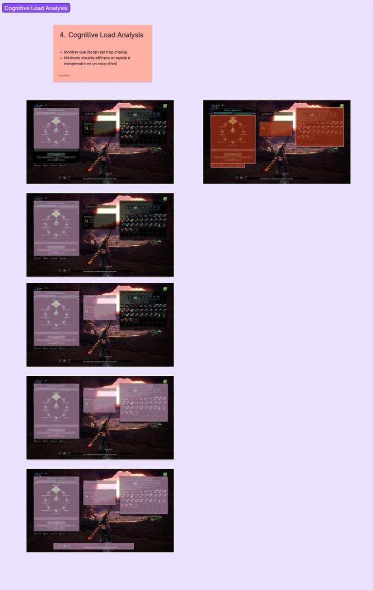
The radial menu, under the microscope
The radial item wheel is essential for high-level play, yet many players never use it. Our scene analysis revealed why:
- There is no logical grouping in the item grid, so healing and utility items are mixed, which slows decisions.
- The wheel resets if the player doesn't save their item set, and all the setup is lost.
Our ideas were to filter the grid to show only carried items, offer pre-built wheels to win over non-users, and warn players about unsaved changes.
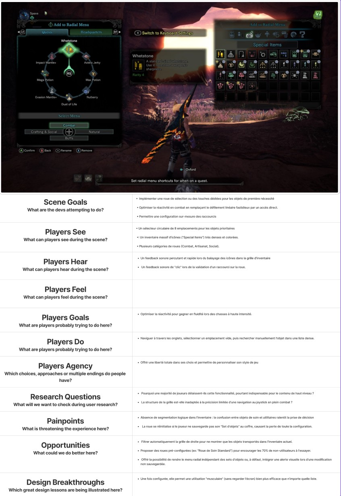
From strategy to structure with wireframing
Once the friction points were identified, we translated our solutions into Low-Fidelity Wireframes. The goal was to reorganize the information architecture without the distraction of visuals. Here is the chest inventory, with the pouch and chest side by side, clearer categories, an item description in the middle and grouped shortcuts.
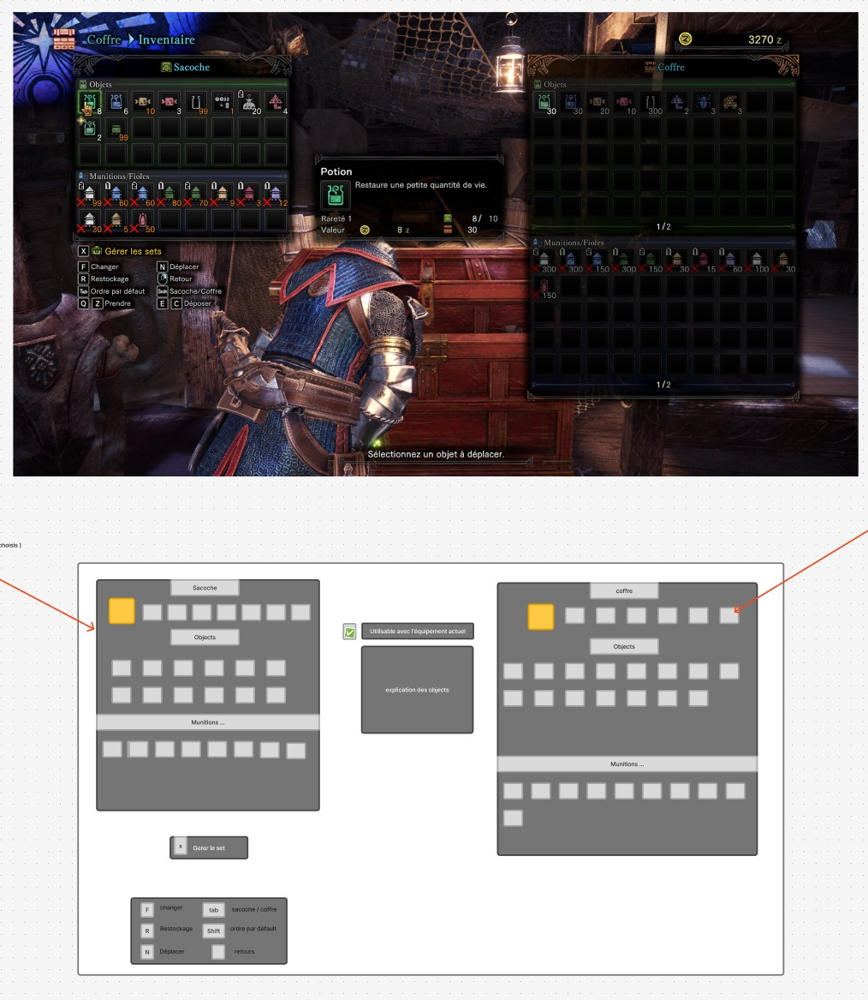
Interactive prototyping in Figma
To validate our ideas, we built High-Fidelity interactive prototypes in Figma. This allowed us to focus on the speed and responsiveness of the menus. We ensured that every action, from navigating the item pouch to swapping weapons, felt smooth and intuitive for the player.
Functionality & accessibility
We also optimized the layout and font sizes to ensure the interface remained readable during intense combat. These prototypes helped us simulate the final experience, ensuring the new UI was more functional and less intrusive while respecting the game's original logic.
Make It Melt
In Make It Melt, you play as Marceline, a skilled blacksmith whose raw materials have unexpectedly come to life and escaped. As these sentient ores are too tough to be broken by force, you must chase them through various levels and use strategy to guide them into the right furnaces. Heat is your only weapon in this frantic quest to reclaim your workshop's supplies.
- Role
- Game Designer & Programmer
- Team
- 5 Game Designers
- Date
- October to December 2025
- Tools
- Unity · C#
My contributions
Rethinking the brawler
This project was developed by a team of five Game Designers. Since we handled the entire programming process ourselves, we had to be pragmatic and adapted our design goals to our technical capabilities to ensure a polished and functional core experience.
Our goal was to deconstruct the traditional idea of a brawler. Inspired by billiard physics, we moved away from pure aggression to incorporate a tactical and reflective layer. Players must anticipate trajectories and calculate angles, making strategy just as vital as the combat itself.
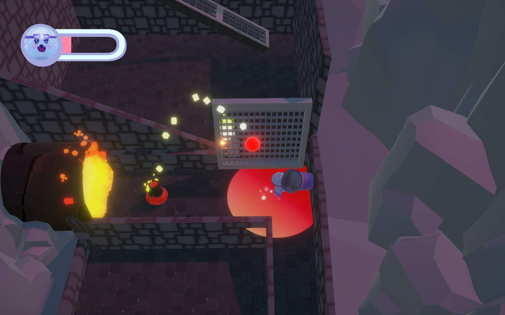
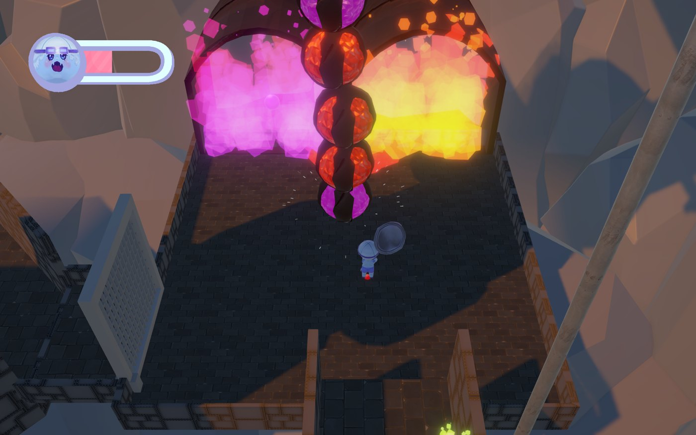
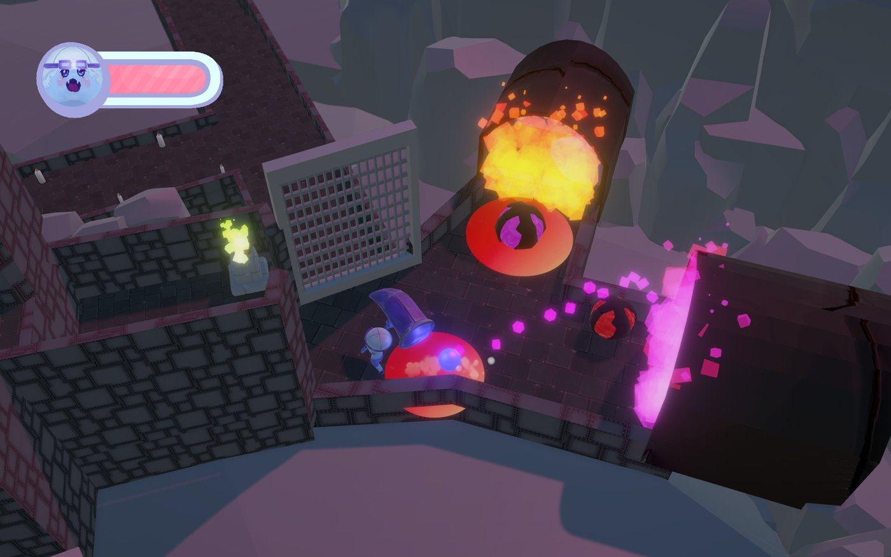
Pitching the vision
While the Game Concept was a collaborative effort, I took full charge of the visual communication for our oral presentations.
I designed and structured the PowerPoint decks, translating our collective ideas into a professional and impactful visual format to ensure our vision was effectively communicated during our pitches.
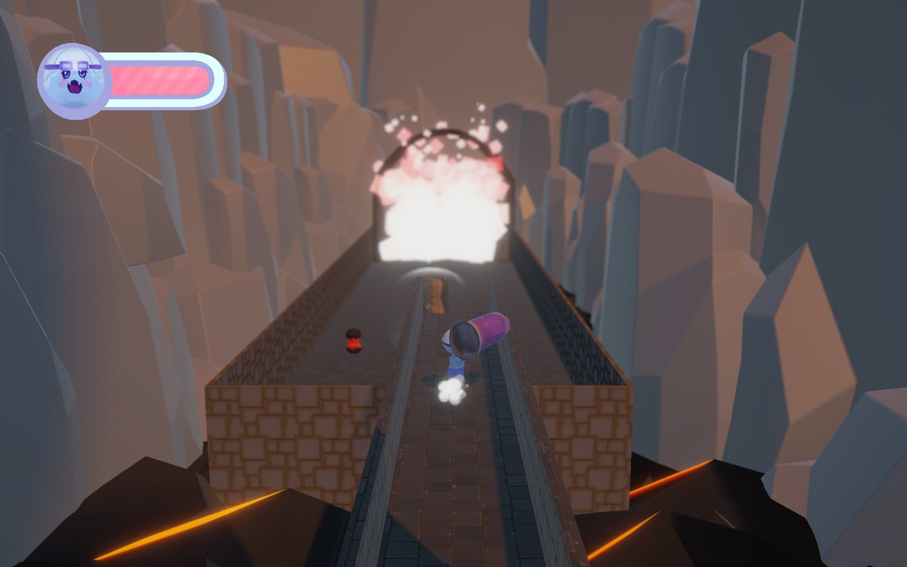
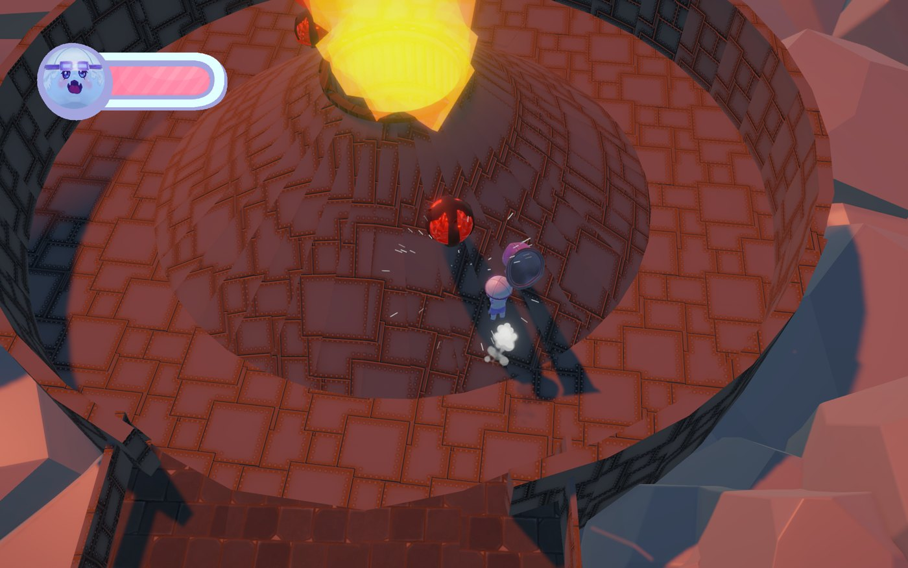
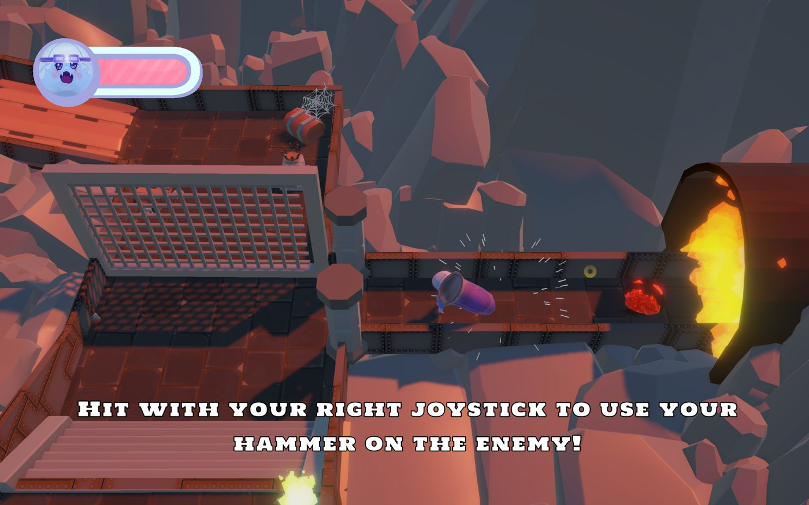
Building the game in Unity & C#
I co-managed the C# programming for this project using Unity. My work focused on building the game's core architecture and ensuring a seamless player experience through four key areas:
Enemy Behaviors
Engineered a diverse range of enemy behaviors using modular logic, including exploding types, jumping mechanics…
Environment & Gameplay Mechanics
Programmed interactive level elements including platforms, door systems, ovens, and checkpoint logic. I also implemented the core player health system.
UI/UX & Scene Management
Developed the complete menu system and programmed smooth scene transitions to ensure a professional flow throughout the game.
Juice & Game Feel
A significant portion of my contribution was dedicated to Game Feel. I implemented VFX (particle systems) and visual feedback to ensure that every interaction felt satisfying, responsive, and immersive.
Sploush
Sploush is a curious slime living in a peaceful city. But for him, life doesn't end at the edge of the local neighborhoods. Convinced that a vast world awaits beyond, he sets off on a journey. His only means of travel? A natural ability to propel himself using powerful water jets.
In this 2.5D platformer, the city becomes a massive playground for vertical exploration. Your survival and progress depend entirely on how you manage your water levels, since every multi-directional blast consumes a part of your internal reservoir. Traverse the city from its deepest alleys to its highest peaks, and finally discover what lies beyond the walls.
- Role
- Game Designer & Level Designer
- Team
- 5 Game Designers, 2 Programmers, 1 Sound Designer
- Date
- April to May 2025
- Tools
- Unity 3D · Trello · Excel
My contributions
From phobia to fun
Sploush was developed as a cross-curriculum team project, bringing together five Game Designers, two Programmers, and one Sound Designer.
Our creative process was highly iterative. We originally envisioned a horror game centered on phobias, specifically aquaphobia, but ultimately pivoted toward a lighter, "goofy" atmosphere to better suit our vision of fun. Despite this shift, we chose to keep water as our core element, transforming it from a source of fear into an atypical and dynamic propulsion system.
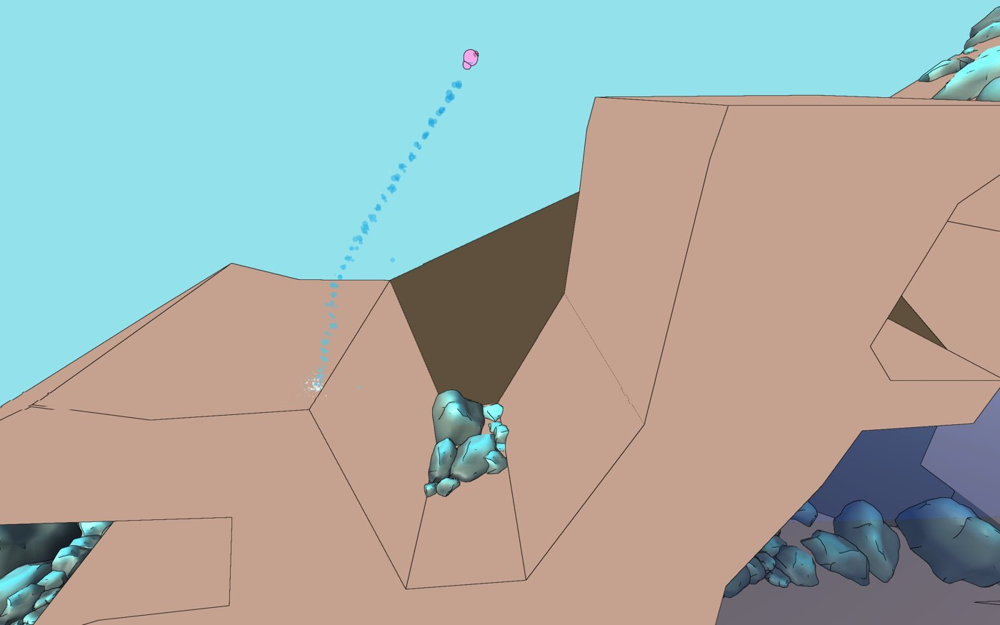
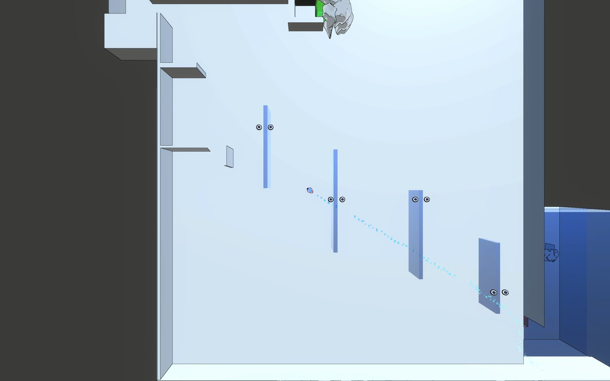
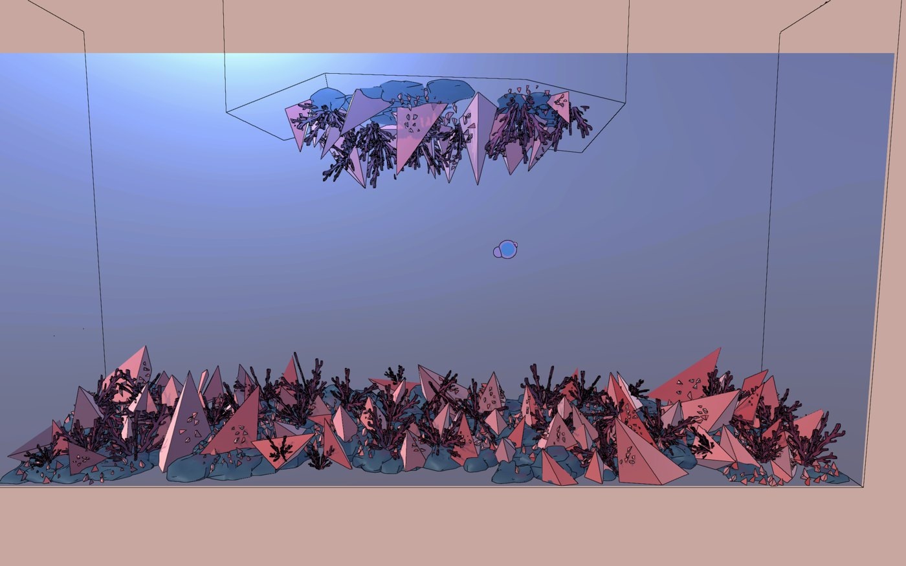
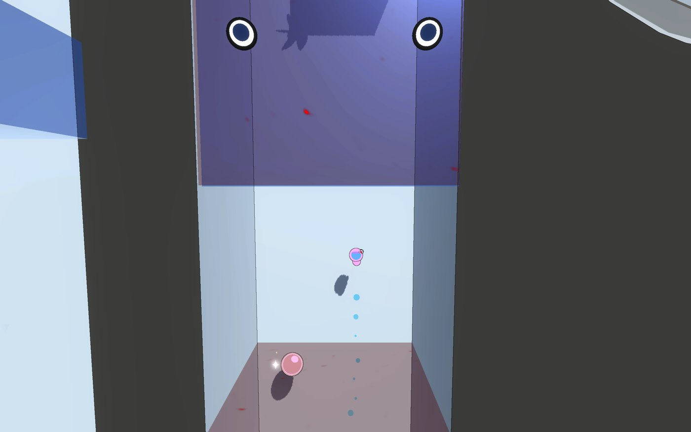
Building the foundation
Throughout the development, we had to balance our creative ambitions with technical feasibility, carefully managing our time and collective skill sets. To stay organized, we relied on industry-standard tools like Trello and Excel.
As a Game Designer, I played a key role in the project's foundation, actively contributing to the creation of the Game Concept Document and the design of the various pitch presentations to ensure a clear and compelling vision for the team.
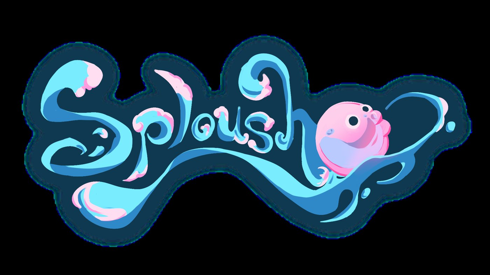
Level 3, The Nightclub
Once the team finalized the core mechanics, I took full ownership of Level 3, The Nightclub. My role was to define the visual identity and atmosphere of this environment while crafting the entire level layout.
My primary design goal was to introduce a new gameplay mechanic, lasers, which required a careful balance of the difficulty curve. Since the game's unique propulsion controls already presented a challenge, I focused on a progressive learning path.
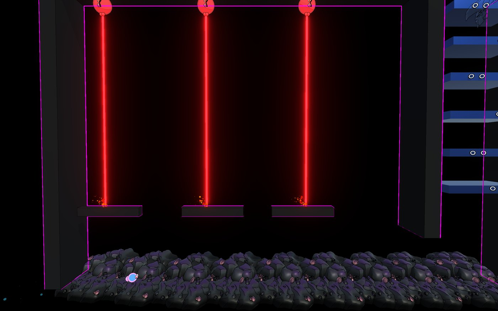
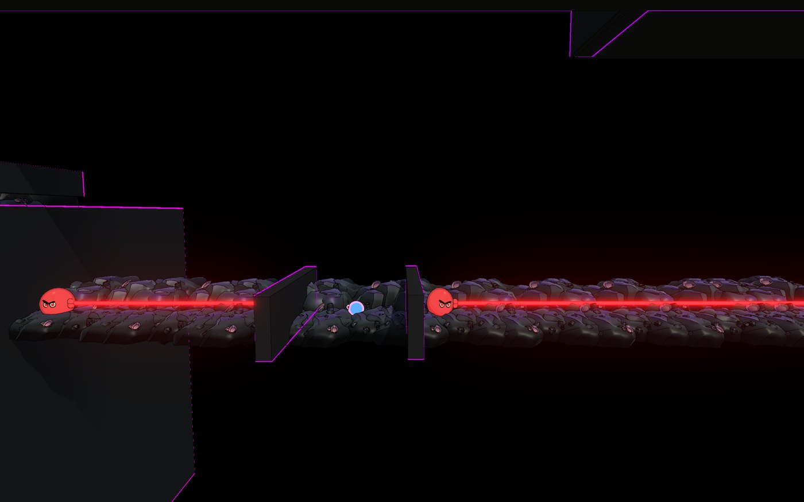
- DiscoverLow-risk encounters let players familiarize themselves with the lasers.
- EscalateThe stakes gradually increase as lasers combine with the existing movement difficulty.
- MasterA level that stays challenging yet fair, with a smooth and rewarding progression.
Cube Breaker
Cube Breaker is a one-button arcade game set in a vibrant neon universe. Master the power of fragmentation in an experience perfectly crafted for mobile gamers.
The core mechanic is simple yet deep. Use a single tap to detonate your energy orb, splitting it into six smaller projectiles that blast outward in a lethal spray. To shatter every cube on the screen, you must time your explosion at the perfect location to trigger the ultimate chain reaction. Analyze the layout, find the sweet spot, and clear levels with the fewest attempts possible. In this world of neon and physics, precision is the key to total destruction.
- Role
- Game Designer & Programmer
- Type
- Solo project
- Date
- January to March 2025
- Tools
- Unity · Visual Scripting
My contributions
One button, one constraint
Cube Breaker is a solo project where I handled every aspect of production myself, including Game Design, Programming, Level Design and Game Feel.
The primary challenge was to design a complete experience using only a single input. This constraint immediately led me to the mobile platform, as "one-button" mechanics perfectly suit the intuitive nature of smartphone gaming.
I drew my main inspirations from the physics-based puzzles of Cut the Rope and the precision of Pinball. Combined with my passion for neon aesthetics, I aimed to create a vibrant experience specifically tailored for casual gamers.
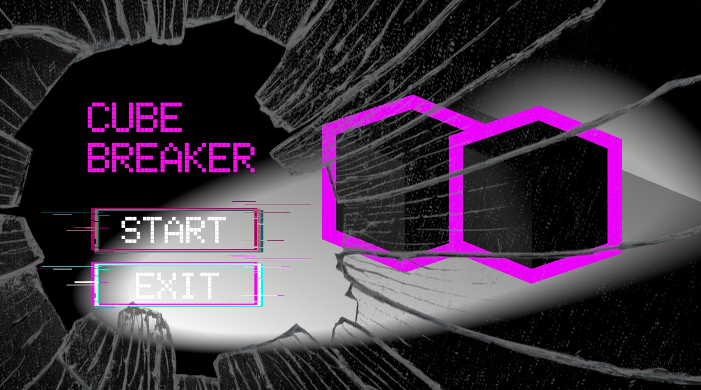
An iterative design process
The project went through several iterations, starting with a comprehensive Game Concept Document (GCD). From a programming perspective, I focused on technical feasibility while ensuring deep, engaging gameplay.
During the prototyping phase, a major design shift occurred when I implemented a ball that moves continuously from right to left. This decision was crucial as it gave the player the power to choose their strategy with millimeter precision, transforming a simple click into a calculated tactical explosion.
Built with Unity's Visual Scripting
On the technical side, I developed the game using Unity's Visual Scripting, focusing heavily on the robustness of the core mechanics.
Fragmentation system
A significant portion of the programming was dedicated to the ball's fragmentation system, ensuring the trajectory of the six sub-projectiles felt natural while preventing technical issues like infinite bouncing loops.
Specialized cubes
I also programmed a variety of specialized cube behaviors, such as teleportation and shrinking, to keep the level design diverse and challenging.
Juice & Game Feel
Game Feel is essential for a casual mobile experience. I implemented several "juice" elements, including screen shakes, custom shaders, and polished particle effects, to make every explosion feel impactful and rewarding for the player.
A seamless, stress-free onboarding
My goal was to create a seamless onboarding experience through organic tutorialization, staying true to the casual mobile gaming philosophy.
- DiscoverThe initial stages let players discover the explosion mechanic and the victory conditions naturally, without the need for intrusive text.
- GrowSpecial-effect cubes are introduced progressively. The number of targets increases and layouts become more complex to maintain a steady challenge.
- ReplayThere is no punitive design. The player decides whether to restart a level to improve their score, in a "relaxing yet engaging" flow.
Voracines
In Voracines, players step into the twisted bark of malevolent, ancient trees fueled by an insatiable hunger for human life force. Set in a world of suffocating darkness, your goal is to expand your corrupt root system across the board to ensnare and devour villagers before your competitors can claim them.
Strategy is at the heart of the forest. You must carefully manage your growth, outmaneuver rival roots, and strategically choke the land to satiate your eternal hunger. In this grim competition, only the most ruthless predator will dominate the soil. Will you starve in the shadows?
- Role
- Game Designer
- Team
- 6 Game Designers, 2 Game Artists
- Date
- [DATE]
- Tools
- Excel · Google Forms · PowerPoint
My contributions
Becoming the predator
Voracines was developed by a collaborative team of six Game Designers and two Game Artists with a clear objective, to create a deep, strategic territory-expansion game.
Our creative process began with extensive research and playtesting of existing board games to identify the most engaging mechanics. From this exploration, the concept of predatory nature emerged, leading us to our signature "root expansion" system.
No more waiting for your turn
One of our primary design challenges was solving the common issue of player downtime.
Through numerous iterations, we focused on keeping the experience engaging for everyone, ensuring that players remain active and invested even when it isn't their turn.
Organizing, testing, pitching
Alongside the design work, I took charge of several key parts of the production.
Organizational workflow
Throughout the project, I was responsible for the organizational workflow, utilizing Excel to manage data and scheduling.
Playtesting
I headed the playtesting phase, creating and analyzing Google Forms to gather player feedback for balancing.
Pitch to the jury
Finally, I managed the visual presentation of the project, designing the PowerPoint materials to pitch our vision effectively to the jury.